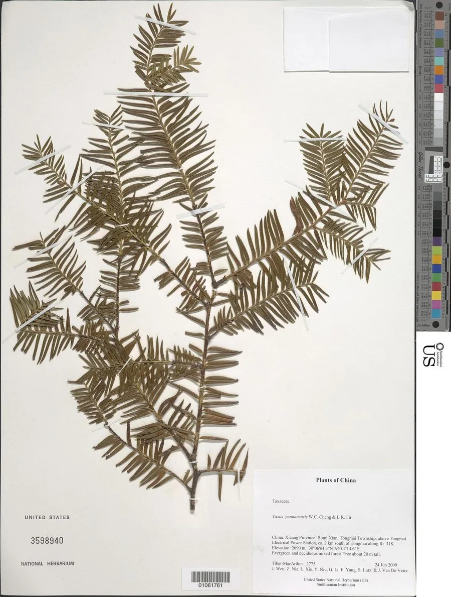

蕨类与裸子植物 · 植物界
云南红豆杉 Taxus yunnanensis

云南红豆杉是中国特有种，树皮与枝叶含紫杉醇，是重要的药用裸子植物，被列为国家一级重点保护野生植物。
- 分类
- 门裸子植物门纲松纲目柏目科红豆杉科属红豆杉属
- 栖息环境
- 海拔 2000–3000 m 的针阔混交林，喜温凉湿润多云雾气候
- 地理分布
- 中国云南、四川、西藏等西南山地，中国特有种
- 保护级别
- IUCN 暂无评估；中国国家一级重点保护野生植物
物种志
云南红豆杉是红豆杉科常绿乔木，高可达 10–20 m，树皮灰褐色至红褐色，呈条片状剥落。叶片条形、扁平，深绿色，螺旋状排列成两列，叶背有两条淡黄色气孔带。雌雄异株，种子坚果状，外被红色肉质假种皮，成熟时鲜艳夺目。它的形态与红豆杉相似，但叶片和小枝特征略有差异。
云南红豆杉是中国特有种，分布于云南、四川、西藏等西南山地，多生于海拔 2000–3000 m 的针阔混交林中，喜温凉湿润、云雾较多的气候。它生长缓慢、天然更新困难。云南红豆杉的树皮与枝叶含紫杉醇，是提取抗癌药物的重要原料，因而曾遭大规模剥皮采伐，野生资源急剧减少。中国将红豆杉属所有种列为国家一级重点保护野生植物，严禁非法采伐，并大力开展人工繁育。
形态与习性
- 树高10–20 m
- 叶条形扁平，排成两列
- 种子外被红色肉质假种皮
- 药用含紫杉醇，抗癌药物原料
- 保护国家一级重点保护野生植物
趣味知识
- 云南红豆杉是中国特有种，只分布在西南山地的高海拔林区。
- 它的树皮和枝叶含紫杉醇，曾被大量剥皮采伐而资源锐减。
- 红豆杉属所有种都被列为国家一级重点保护野生植物。